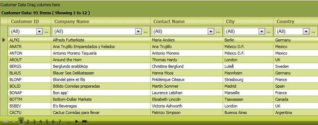
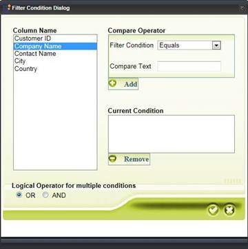

Using this feature, you can customize skins in every element in the GridGroupingControl using CssClass. This way, you can customize the skins of a number of elements of the GridGroupingControl.
The following figures give you a basic idea of the customization that can be attained using this feature:

Figure 125: Grid with custom skin

Figure 126: Filter Dialog with custom skin
To customize the various elements in the GridGroupingControl, you will have to set a CssClass and set a skin accordingly.
 Where do I find Installed samples?
Where do I find Installed samples?